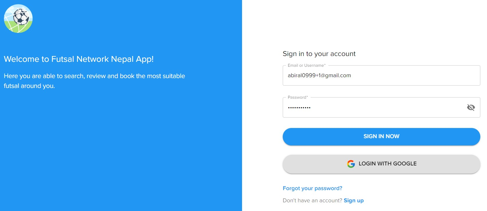
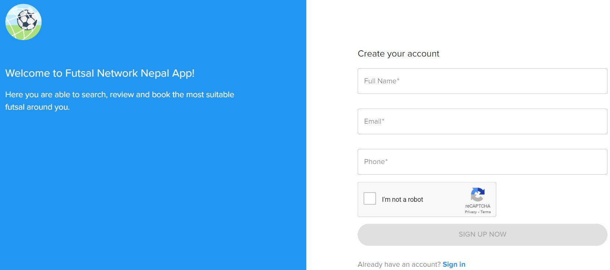
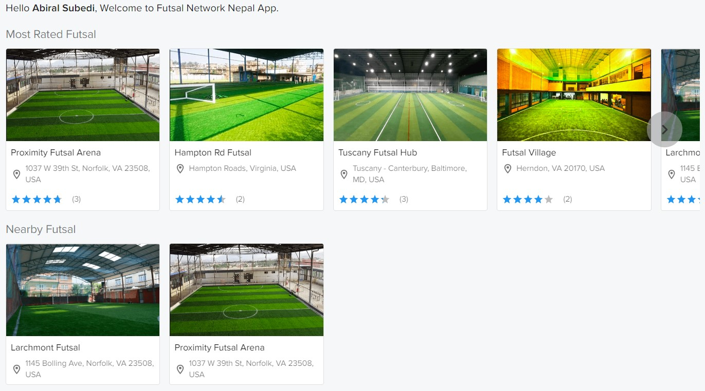
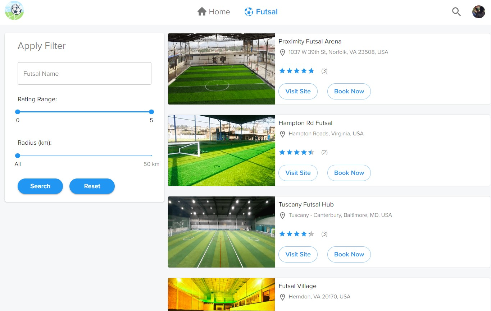
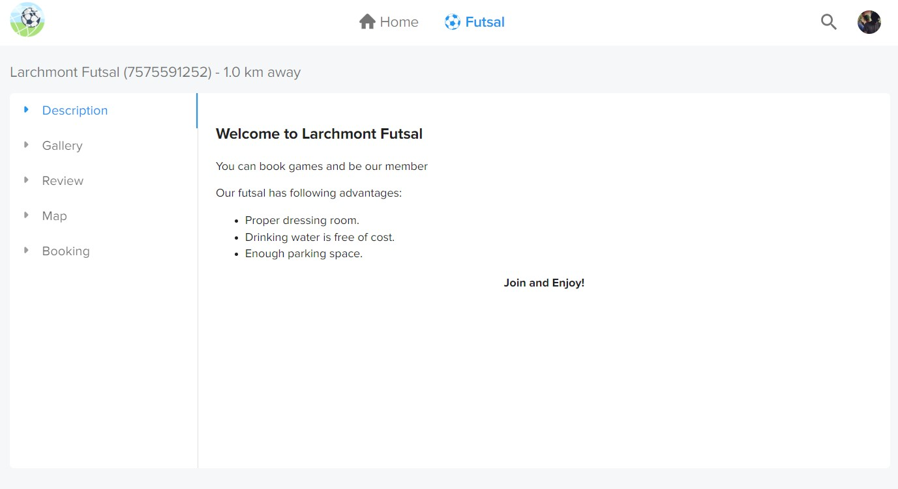
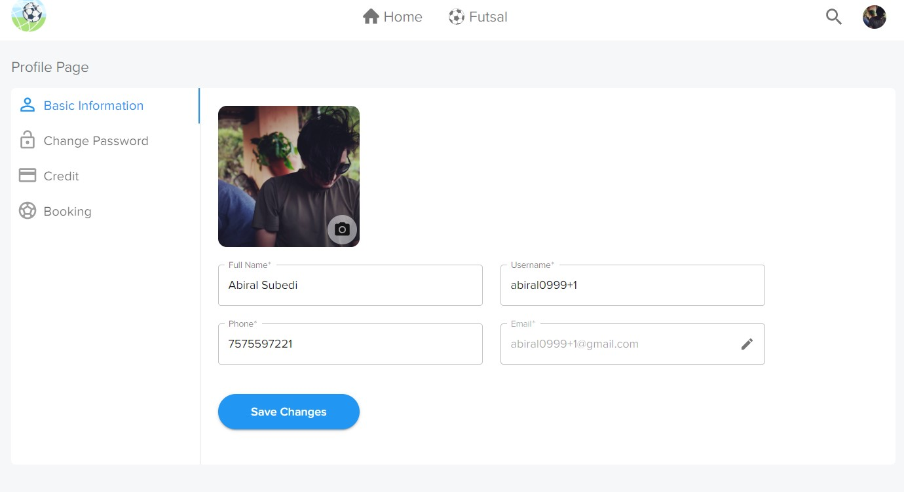

Welcome to Futsal Network Nepal! Here you are able to search, review and book the most suitable futsal around you.
Welcome to Futsal Network Nepal! Here you are able to search, review and book the most suitable futsal around you.
Greetings from Abiral Subedi and Ramesh Dhungana! We are graduate students pursuing Master’s in Computer Science at Old Dominion University. We are also a Research Assistant at Hands-on Lab for the Department of Computer Science. We have created an application called Futsal Network Nepal. Futsal is an indoor football game played in a small area with generally 5 to 7 player a side and is officially recognized by Federation Internationale de Football Association (FIFA).
Futsal Network Nepal will be one of the first application to integrate multiple futsal together and promote them in local market. It primarily focuses on connecting futsal with players which assists them to locate the best ground around them. It will not be only sharing futsal information but also allow users to book available game hour on any ground which makes it an essential app for futsal lovers.
We are a football enthusiast who have been playing futsal for over five years now. With our experience, it is very difficult to find the most suitable futsal and learn whether there is any free game hour available. There is no any single platform which integrates different futsal into a single application. Today in the technological world, we have to find phone numbers of known futsal ground and call them to know extra information which is significant waste of time. Also sometimes there is a clash between two bookings as they are maintained in a sheet of paper rather than a database system. These records are not preserved so we cannot get our booking and payment history sheet for future reference.
In order to mitigate these problems and develop a well-organized network of futsal, we have been motivated to build the project, Futsal Network Nepal. It is a fully fledged web application which keeps user a click away from finding all necessary information about futsal around them. You can easily go the application and start using the platform without any special startup requirement.
Futsal Network Nepal is a full fledged application which connects users with fustal owners and allows users to search, review and book the most suitable futsal around them. At first, user logs in to the application using basic authentication with email and password or direct login with Google. If the user is new to system, they should register first with personal detail and email address. After the user is logged in, they are redirected to the home page where they are first asked to provide location permission to the web application for a better experience. The page has two sections: Most Rated and Nearby Futsal. In most rated futsal, it displays the name of futsal including location and average rating provided by users. For nearby, all the futsal which are located within 6 kilometers aerial radius of the user’s current location are displayed.
Users are also able to search futsal using filter options. Initially, the page displays all of the futsal registered into the system. There are 3 filter options available that the user can set to search the desired place: futsal name, rating range, and radius. If the futsal name and radius are not set to any specific value, these filters won’t apply to the search result. Users can type in name, and select a range of ratings and the maximum radius that the futsal can be from the user’s location. The result is displayed in card form which contains the name of futsal, rating, and buttons to view detail and book game hours.
After user selects a futsal, they are redirected to its detailed page which has five tabular information: Description, Gallery, Review, Map and Booking. The description tab contains the information about the futsal that the owner wants their users to know and gallery tab displays various pictures of the ground. Users are also able to view the ratings provided by people and rate it by themselves. In case user gets confused on the actual location of futsal, there is Map tab which shows the place in Google Maps. In booking tab, users can select a date and field to see the available game hours to book. After selecting a game hour in futsal, it displays the amount required to be paid. In order to buy credit, user has to enter card detail and top up any amount. If user has enough credit, they can directly book it. Then, user receives a confirmation email about the booking completion and are able see its detail in booking history page.
There is a profile dropdown that includes the user’s full name and a button to log out of the current session. Also, there is a slider to toggle the application between dark and light theme modes. On the left plane, there are four tabs: Basic Information, Change Password, Credit and Booking. Under Basic Information tab, users are able to update their profile information and can change their password in Change Password tab. Credit tab shows the current balance of user along with credit usage history. They can also top up balance by paying through Stripe. Under Booking tab, users are able to view all of their booking history and cancel any possible booking.

Login screen for user

Registration page for user

Dashboard page for user

User page to search required futsal with filter options

Selected Futsal page

Profile page for user